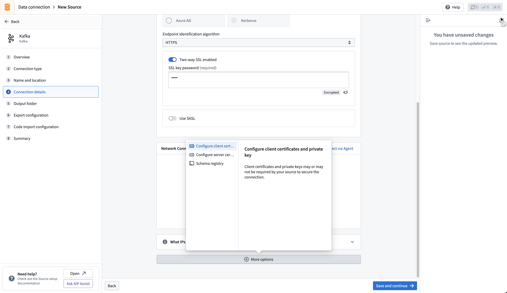
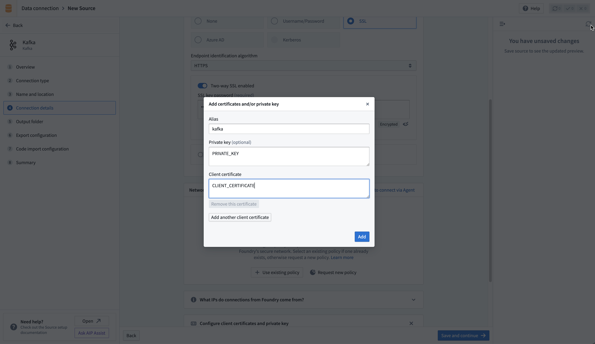
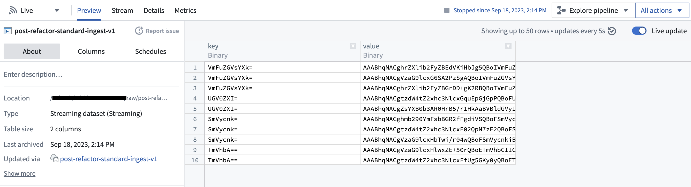
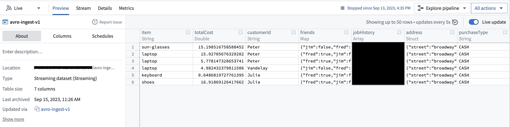

Connect Foundry to Kafka to read data from a Kafka queue into a Foundry stream in realtime.
| Capability | Status |
|---|---|
| Exploration | ð¢ Generally available |
| Streaming syncs | ð¢ Generally available |
| Streaming exports | ð¢ Generally available |
| key (binary) | value (binary) |
|---|---|
| London | {"firstName": "John", "lastName": "Doe"} |
| Paris | {"firstName": "Jean", "lastName": "DuPont"} |
The Kafka connector does not parse message contents, and data of any type can be synced into Foundry. All content is uploaded, unparsed, under the value column. Use a downstream streaming transform (for example, parse_json in Pipeline Builder) to parse the data. The key column will display the key that was recorded in Kafka along with the message. If the message does not include a key, the value will be null.
The connector uses one consumer thread by default. You can configure additional threads to increase throughput, where each creates an independent Kafka consumer assigned a subset of the topic's partitions by the broker. Note that configuring more threads than partitions provides no added benefit, as the extra threads will remain idle.
Streaming syncs are meant to be consistent, long-running jobs. Any interruption to a streaming sync is a potential outage depending on expected outcomes.
Currently, streaming syncs have the following limitations:
We recommend running streaming syncs on a Foundry worker. If the Kafka brokers are on a network that Foundry cannot reach directly, use agent proxy egress policies rather than a legacy agent worker source.
Learn more about setting up a connector in Foundry.
:::callout{theme="neutral"} If you do not see Kafka on the connector type page, contact Palantir Support to enable access. :::
| Parameter | Required? | Default | Description |
|---|---|---|---|
| Bootstrap servers | Yes | No | Add Kafka broker servers in the format HOST:PORT, one per line. |
Select a credential method to authenticate your Kafka connection: SSL, Username/Password, Azure AD, Kerberos, or NONE.
Configured credentials must allow the following operations:
Topic resource:Read for streaming syncs and explorationWrite for streaming exportsSSL authentication corresponds to the standard Kafka SSL and SASL_SSLprotocols.
To authenticate with SSL, complete the following configuration options:
| Parameter | Required? | Default | Description |
|---|---|---|---|
| Endpoint identification algorithm | Yes | HTTPS |
HTTPS: Verify that the broker host name matches the host name in the broker's certificate. NONE: Disable endpoint identification. |
| Custom client private key password (legacy) | No | Disabled | Applies only to legacy agent worker sources. Enable when your target requires mutual TLS and the password of the private key differs from the keystore password. |
| Use SASL | No | No | Enable SASL authentication. |
If your connection requires mutual TLS (two-way SSL) follow the steps to add your private key. If you require a custom client private key password, complete the following configuration options:
| Parameter | Required? | Default | Description |
|---|---|---|---|
| SSL key password | Yes | No | Password required to decrypt private key. |
If enabling SASL authentication, complete additional configuration:
| Parameter | Required? | Default | Description |
|---|---|---|---|
| SASL mechanism | No | No | Select the algorithm with which to encrypt credentials. |
saslJaasConfigUsername |
Yes | No | Username |
| SASL JAAS config password | Yes | No | Password |
| SASL client callback handler class | Yes | No | Shows the default callback handler for SASL clients. See the Java SASL API documentation â for more information about SASL callback handlers. |
OAuth authentication uses the OAuth 2.0 protocol. Only the Client Credentials Grant flow is currently supported.
To use the OAuth 2.0 protocol for authentication, complete the following configuration options:
| Parameter | Required? | Default | Description |
|---|---|---|---|
| Client ID | Yes | No | The ID of your application requesting authentication |
| Client Secret | Yes | No | The shared secret between the server and your application |
| Token Endpoint URI | Yes | No | The Uniform Resource Identifier (URI) of the server that grants access or ID tokens |
| Scopes | No | No | Connecting via OAuth to Kafka, or specific Kafka topics, may require requesting a collection of scopes. Scopes are arbitrary string values configured in the authentication provider. For example, consumers may need to request one of (kafka-topics-read, kafka-topics-list) in their authentication request to determine the level of access to Kafka they receive. |
| SASL Extensions | No | No | Some Kafka servers, for example Confluent Cloud, may require SASL extensions â to be configured, which would be key-value pairs specific to that server platform. |
The Azure AD authentication mode applies to the Kafka interface for Azure Event Hubs. This mode requires an Azure AD service principal. Review the Azure documentation â to learn how to create a service principal and set up access to Event Hubs.
| Parameter | Required? | Default |
|---|---|---|
| Tenant ID | Yes | No |
| Client ID | Yes | No |
| Client secret | Yes | No |
The Kafka interface for Azure Event Hubs can also be accessed through a SAS Token â. To authenticate with a SAS token, select Username/Password authentication, with username $ConnectionString (no quotes) and password your EventHubs connection string.
Corresponds to Kafka's standard PLAINTEXT protocol.
:::callout{theme="danger"} We highly discourage configuring the connector without authentication or SSL as this will pass unencrypted data between the connector and the Kafka broker. Only use this configuration within secure networks. :::
The connector must have access to the host of the Kafka broker. If using a direct connection, create DNS egress policies for all bootstrap server hosts.
You may need to configure additional client or server certificates and private keys for SSL and TLS.
:::callout{theme="neutral"} For sources using a Foundry worker, you can create and manage certificates centrally using egress certificates in Control Panel. Configured certificates can then be applied to your Data Connection source. :::
SSL connections validate servers certificates. Normally, SSL validations occur through a certificate chain; by default, both agent and Foundry workers trust most standard certificate chains. However, if the server to which you are connecting has a self-signed certificate, or if hostname validation intercepts the connection, the connector must trust the certificate. Contact your Kafka administrator for the right certificate to use.
Learn more about using certificates in Data Connection.
Your Kafka cluster might require that both the server and client authenticate through mTLS. To enable mTLS, you must configure the following:
Follow the steps below to configure a client private key based on the connector run type.
If connecting via an agent, follow the instructions on how to add a private key
If connecting directly, upload your private key in the Configure client certificates and private key section of the connector configuration page. Use the alias kafka in the pop-up that appears, then add the private key and client certificate.


:::callout{theme="neutral"} For more complex scenarios, use pro-code alternatives. :::
Learn how to set up a sync with Kafka in the Set up a streaming sync tutorial.
The Kafka Schema Registry functions as a centralized storage system, maintaining a versioned history of all schemas. The registry offers compatibility with Avro, Protobuf, and JSON schemas, and uses SerDes (Serializer/Deserializer) to facilitate conversions between schema formats and serialized data.
To leverage the Kafka Schema Registry effectively, it is necessary to register schemas for the relevant Kafka topics and append the Schema Registry URL to the source configuration. This adjustment enables the connector to transform raw bytes into corresponding data types.
For instance, a standard extraction would typically ingest raw bytes from Kafka into Foundry, as depicted below:

However, with the Schema Registry configured, the connector can discern the underlying schema of the bytes and transform them into first-class Foundry types, as shown here:

This feature can significantly streamline downstream pipelines by eliminating the need for cumbersome type conversion. Moreover, it elevates data consistency guarantees, given that the Schema Registry offers centralized schema management and compatibility checks as schemas evolve.
:::callout{theme="neutral"} For more complex scenarios, use pro-code alternatives. :::
The connector supports exporting streams to external Kafka clusters via Data Connection.
To export to Kafka, first enable exports for your Kafka connector. Then, create a new export.
| Option | Required? | Default | Description |
|---|---|---|---|
Topic |
Yes | N/A | The Kafka topic to which you want to export. |
Linger milliseconds |
Yes | 0 | The number of milliseconds to wait before sending records to Kafka. Records that accrue during the waiting time will be batched together when exported. This setting defaults to 0, meaning that records will be sent immediately. However, this default may result in more requests to your Kafka instance. |
Key column |
No | Undefined | The column from the Foundry stream that you wish to use as the Key when publishing records to Kafka. Null keys are not supported; ensure the selected column is populated for all records in the stream being exported. |
Value column |
No | Undefined | The column from the Foundry stream that you wish to export. If not specified, all fields from the row will be serialized as bytes and exported to Kafka in the body of the message. |
Header column |
No | Undefined | The column from the Foundry stream that you wish to use as the headers attached to a streaming record. This column must be of type struct, and all fields in your struct will be parsed as a string. If not specified or if the column is null, no headers will be attached. |
Enable Base64 Decode |
No | Disabled | Binary data in Foundry streams is Base64 encoded when stored internally. When enabled, this flag will result in binary data being decoded before exporting. This may only be enabled if both Key column and Value column are specified. |
:::callout{theme="warning"} We do not recommend exporting to Kafka through export tasks. If possible, existing export tasks should be migrated to use our recommended export capability. The documentation below is intended for historical reference. :::
To begin exporting data using export tasks, navigate to the Project folder that contains the Kafka connector to which you want to export. Right select on the connector name, then select Create Data Connection Task.
In the left side panel of the Data Connection view:
Source name matches the Kafka connector you want to use.Input called dataset of type Streaming dataset. The input dataset is the Foundry dataset being exported.Output called dataset of type Streaming export. The output dataset is used to run, schedule, and monitor the task.Use the following options when creating the YAML:
| Option | Required? | Default | Description |
|---|---|---|---|
maxParallelism |
Yes | No | The maximum allowed number of parallel threads used to export data. Actual number of threads is dictated by the number of partitions on the input Foundry stream (if lower than maxParallelism). |
topic |
Yes | No | The name of the topic to which data is pushed. |
clientId |
Yes | The identifier to use for the export task. The identifier maps to the Kafka client.id. Review the Kafka documentation â for more information. |
|
batchOptions |
Yes | No | See batchOptions configuration below. |
keyColumn |
No | No | Name of a column in input streaming dataset. Values in this column are used as the key in exported messages. Omitting this property will export null values for the key. |
valueColumn |
No | No | Name of a column in input streaming dataset. Values in this column are used as the value in exported messages. Omitting this property will export all columns (as a stringified JSON object) under the value field. |
enableIdempotence |
No | true |
Review the Kafka documentation â for more information. |
useDirectReaders |
Yes | No | Always set false. Configure per the example. |
transforms |
Yes | No | See the example configuration below. |
Configure batchOptionsusing the following options:
| Option | Required? | Default | Description |
|--- |--- |--- |--- |
| maxMilliseconds | Yes | No | The maximum duration (in milliseconds) to wait before writing available rows to the output topic. Lower this value to reduce latency, increase to reduce network overhead (number of requests). This value is used unless the batch hits the maxRecords limit first. |
| maxRecords | Yes | No | The maximum number of messages to buffer before writing to the output topic. Lower this value to reduce latency, increase to reduce network overhead (number of requests). This value is used unless the batch hits the maxMilliseconds limit first. |
The following shows an example export task configuration:
type: streaming-kafka-export-task
config:
maxParallelism: 1
topic: test-topic
clientId: client-id
keyColumn: key
valueColumn: value
batchOptions:
maxMilliseconds: 5000
maxRecords: 1000
transforms:
transformType: test
userCodeMavenCoords: []
useDirectReaders: false
After you configure the export task, select Save in the upper-right corner.
Pro-code alternatives can be used to connect to Kafka sources for more complex scenarios. The examples below demonstrate how to connect to an Apache Kafka source using the Python client for Apache Kafka â, kafka-python in an external transform.
This example reads messages from a given Kafka topic using incremental batch processing. It reads for one minute at a time, or up to 100 messages.
from transforms.api import Output, lightweight, incremental, transform_pandas
from transforms.external.systems import external_systems, Source, ResolvedSource
from datetime import timedelta, datetime
from kafka import KafkaConsumer
import json
import pandas as pd
@lightweight
@incremental()
@external_systems(
kafka_source=Source("<source_rid>>")
)
@transform_pandas(
Output("<output_dataset_rid>"),
)
def compute(kafka_source: ResolvedSource) -> pd.DataFrame:
# 1. Set up the Kafka consumer
USERNAME = kafka_source.get_secret("username")
PASSWORD = kafka_source.get_secret("password")
BOOTSTRAP_SERVER = "<server in the form host[:port]> " # Can also be a list of servers
TOPIC = "<topic name>"
CONSUMER_NAME = "<consumer name>" # Unique name for the consumer for committing offsets
consumer = KafkaConsumer(
TOPIC,
bootstrap_servers=BOOTSTRAP_SERVER,
security_protocol="SASL_SSL",
sasl_mechanism="PLAIN",
sasl_plain_username=USERNAME,
sasl_plain_password=PASSWORD,
group_id=CONSUMER_NAME,
enable_auto_commit=True, # Enable automatic offset commit
)
# 2. Define time and content limits for message reading
MAX_BATCH_SIZE = 100
TIMEOUT_MINUTES = 1
END_TIME: datetime = datetime.now() + timedelta(minutes=TIMEOUT_MINUTES)
# 3. Fetch and process messages
events_received = []
count = 0
while datetime.now() < END_TIME and count < MAX_BATCH_SIZE:
# Poll for messages (wait up to 1 second for new messages)
msg_pack = consumer.poll(timeout_ms=1000)
for _, messages in msg_pack.items():
for message in messages:
events_received.append(json.loads(message.value))
count += 1
consumer.close()
# 4. Return the results
return pd.DataFrame(events_received)
The following example reads all available messages from a Kafka topic and persists offsets in a separate dataset so that subsequent runs resume where the previous run stopped. Unlike the basic example above, this approach does not rely on Kafka consumer group auto-commit. Instead, it manually assigns partitions, seeks to previously saved offsets, and polls until each partition's end offset is reached.
The transform produces two outputs:
records_output: The ingested Kafka recordsoffsets_output: A small dataset that stores the last consumed offset per partition, used on the next incremental runimport logging
from datetime import datetime, timedelta
from collections import defaultdict
import polars as pl
from kafka import KafkaConsumer
from transforms.api import (
Output,
transform,
incremental,
LightweightOutput,
IncrementalLightweightOutput,
IncrementalTransformContext,
)
from transforms.external.systems import external_systems, Source, ResolvedSource
logger = logging.getLogger(__name__)
def wait_for_partition_assignment(consumer, timeout_seconds=30):
"""Poll until the broker assigns partitions to this consumer."""
deadline = datetime.now() + timedelta(seconds=timeout_seconds)
while not consumer.assignment():
consumer.poll(timeout_ms=100)
if datetime.now() > deadline:
raise TimeoutError(
f"Partition assignment did not complete within {timeout_seconds} seconds."
)
def read_offsets(offsets_output, ctx):
"""Read the offset map from the previous incremental run."""
if not ctx.is_incremental:
return {}
offset_df = offsets_output.polars(mode="previous")
result = defaultdict(dict)
for row in offset_df.iter_rows(named=True):
result[row["topic"]][row["partition"]] = row["offset"]
return result
def write_offsets(offsets, offsets_output):
"""Persist the current offset map for the next incremental run."""
rows = [
{"topic": topic, "partition": partition, "offset": offset}
for topic, partitions in offsets.items()
for partition, offset in partitions.items()
]
df = pl.DataFrame(rows, schema={"topic": pl.Utf8, "partition": pl.Int32, "offset": pl.Int64})
offsets_output.set_mode("replace")
offsets_output.write_table(df)
@external_systems(
kafka_source=Source("<source_rid>")
)
@incremental()
@transform.using(
records_output=Output("<records_dataset_rid>"),
offsets_output=Output("<offsets_dataset_rid>"),
)
def compute(
kafka_source: ResolvedSource,
records_output: LightweightOutput,
offsets_output: IncrementalLightweightOutput,
ctx: IncrementalTransformContext,
):
# 1. Create consumer with manual offset management
consumer = KafkaConsumer(
"<topic_name>",
bootstrap_servers="<bootstrap_server>",
security_protocol="SASL_SSL",
sasl_mechanism="PLAIN",
sasl_plain_username=kafka_source.get_secret("username"),
sasl_plain_password=kafka_source.get_secret("password"),
enable_auto_commit=False,
auto_offset_reset="earliest",
group_id="external-transform-consumer",
)
# 2. Wait for partition assignment and record end offsets as a stopping point
wait_for_partition_assignment(consumer)
end_offsets = {tp.partition: consumer.end_offsets([tp])[tp] for tp in consumer.assignment()}
# 3. On incremental runs, seek each partition to its last saved offset + 1
saved_offsets = read_offsets(offsets_output, ctx)
topic_offsets = saved_offsets.get("<topic_name>", {})
for tp in consumer.assignment():
last_offset = topic_offsets.get(tp.partition)
if last_offset is not None:
consumer.seek(tp, last_offset + 1)
# 4. Poll messages until end offsets are reached
current_offsets = {}
rows = []
MAX_IDLE_POLLS = 5
idle_count = 0
while idle_count <= MAX_IDLE_POLLS:
msg_pack = consumer.poll(timeout_ms=1000, max_records=1000)
if not msg_pack:
idle_count += 1
continue
idle_count = 0
for tp, messages in msg_pack.items():
for message in messages:
rows.append({
"topic": message.topic,
"partition": message.partition,
"offset": message.offset,
"timestamp": message.timestamp,
"key": message.key.decode("utf-8") if message.key else None,
"value": message.value.decode("utf-8"),
})
current_offsets[tp.partition] = message.offset
# Stop once every partition has reached its end offset
if all(
current_offsets.get(p, -1) >= end - 1
for p, end in end_offsets.items()
):
break
consumer.close()
# 5. Write records to the output dataset
if rows:
records_df = pl.DataFrame(rows)
records_output.set_mode("replace")
records_output.write_table(records_df)
else:
ctx.abort_job()
return
# 6. Persist offsets for the next run
all_offsets = dict(saved_offsets)
all_offsets["<topic_name>"] = current_offsets
write_offsets(all_offsets, offsets_output)
Key differences from the basic example:
wait_for_partition_assignment() helper ensures the consumer has been assigned partitions before reading end offsets.For high-volume topics where holding all rows in memory could cause out-of-memory errors, consider using the memory-aware buffered Parquet writer pattern to flush records to disk incrementally instead of collecting them all before writing.
This example writes synthetic sensor data to a given Kafka topic every two seconds, for one minute.
from transforms.api import Output, transform_pandas, lightweight
from transforms.external.systems import external_systems, Source, ResolvedSource
from datetime import datetime, timedelta
import pandas as pd
from kafka import KafkaProducer
import time
import random
import json
@external_systems(
kafka_source=Source("<source_rid>>")
)
@transform_pandas(
Output("<output_dataset_rid>"),
)
def compute(kafka_source: ResolvedSource) -> pd.DataFrame:
# 1. Set up the Kafka producer
USERNAME = kafka_source.get_secret("username")
PASSWORD = kafka_source.get_secret("password")
BOOTSTRAP_SERVER = "<server in the form host[:port]> " # Can also be a list of servers
TOPIC = "<topic name>"
producer = KafkaProducer(
bootstrap_servers=BOOTSTRAP_SERVER,
security_protocol="SASL_SSL",
sasl_mechanism="PLAIN",
sasl_plain_username=USERNAME,
sasl_plain_password=PASSWORD,
)
# 2. Define parameters for periodic data sending
TIMEOUT_MINUTES = 1
INTERVAL_SECONDS = 2
END_TIME: datetime = datetime.now() + timedelta(minutes=TIMEOUT_MINUTES)
# 3. Send sensor data
events_sent = []
while datetime.now() < END_TIME:
data = get_random_sensor_data(datetime.now()) # This should be replaced with actual data
producer.send(TOPIC, value=json.dumps(data).encode("utf-8"))
events_sent.append(data)
time.sleep(INTERVAL_SECONDS)
producer.flush()
producer.close()
# 4. Return the results
return pd.DataFrame(events_sent, columns=["timestamp", "temperature_c", "humidity_percent", "pressure_hpa", "status"])
def get_random_sensor_data(timestamp):
"""Generate random sensor data for a given timestamp. Should be replaced with actual data"""
def random_sensor_status():
# 90% OK, 8% WARN, 2% FAIL
return random.choices(["OK", "WARN", "FAIL"], weights=[90, 8, 2], k=1)[0]
return {
"timestamp": timestamp.isoformat(),
"temperature_c": round(random.gauss(22, 2), 2), # mean=22C, std=2
"humidity_percent": round(random.gauss(50, 10), 1), # mean=50%, std=10
"pressure_hpa": round(random.gauss(1013, 5), 1), # mean=1013 hPa, std=5
"status": random_sensor_status(),
}